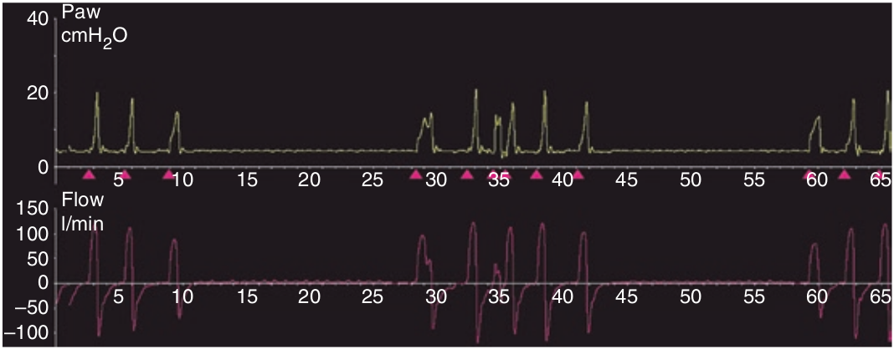

در هنگام تنفس شین استوکس، تهویه بیمار بین حالت تنفس های عمیق و گاها سریع (هیپرپنه) از یک طرف و کاهش تدریجی و آپنه نوسان دارد. این الگو مرتب تکرار میشود و هر سیکل آن ۳۰ الی ۱۲۰ ثانیه طول میکشد. این الگوی غیر طبیعی تنفس در اثر آسیب مرکز تنفس (استروک) و یا اختلالات مربوط به نارسائی مزمن قلبی بروز می کند.

در مورد تنفس شین استوکس کدام مورد غلط است؟
۱ - در منحنی فشار تظاهر می یابد
۲ - در منحنی شدت جریان تظاهر می یابد
۳ - از علل آپنه مرکزی است
۴ - فقط هنگام خواب روی میدهد
۵ - هنگام خواب در افراد سالم در ارتفاعات ممکن است روی دهد